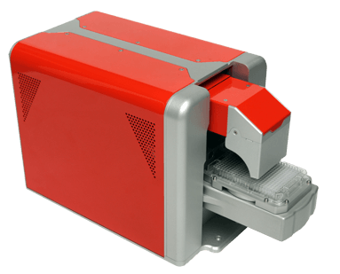

BeeSure™ Level Sensing System
The BeeSure Level Sensing System provides peace of mind that your sample handling automation delivers what you require it to do. This quality control tool measures the change in level within a sample vessel (microplate well, micro-tube, vial, reagent container, test tube) on the addition or subtraction of substance within the sample vessel. The substance can be either liquid or solid.
Using a different sensing technology, BeeSure adds to life science lab automation the same function that vision QC systems provide for large scale industrial manufacturing processes. Proactively detect a faulty dispensing system or blocked tip during pipetting operations. Verify that all the wells in a microplate were as they should have been both before and after the pipetting task in your workflow. Ensure that you have enough substance in a reagent supply vial or reservoir to complete a run with your automation system. Continuously monitor your processes to validate and document their execution before wasting high value samples and reagents because you were unaware of a system failure.
BeeSure is easy and intuitive to use, only requiring one standard electrical output and a very small space on your automation platform, sample deck or lab bench. Place multiple BeeSure units at different nodes in your work flow to increase throughput and efficiency.
Key Features and Benefits
- 96-well plates (std. or deep) and tube racks in 30 seconds. 384-well plates in 2 minutes at standard precision (±0.1 mm)
- Topographic map for any surface within an ANSI/SBS footprint. Detect de-lidding errors, on or off or other depth anomalies, missing vials, reagent bottles
- Easy integration and data output to LIMS
- 3D bar graph for easy visualization of substance volume for known vessel. Estimated volume charted from standard curve
- No consumables for operation
384-Well Plate 3D Bar Graph Volume Visualization

General Specifications
| BeeSure 96/384 | |
| Height (inches) | 10.9 |
| Width (inches) | 8.9 |
| Depth (inches) | 19.5 |
| Weight (pounds) | 36.9 |
| Plate indexing | Yes |
| Loading | Portrait and landscape |
| 96-well formats | Most |
| 384-well formats | Most |
| Maximum vessel height (mm) | 51 |
| Communications | USB 2.0 |
| Electrical | 100-240 VAC, 50/60 Hz, 2 A |